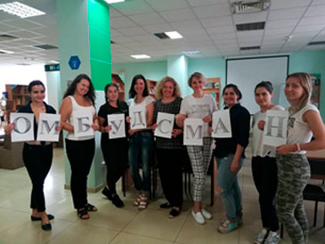

Women's rights ombudsmen in the media
28.05.18

Впродовж чотирьох місяців з серпня по листопад 2018 року відбувався проект «Омбудсмани прав жінок у ЗМІ» від ГО «Ти потрібен Україні». Проект здійснювався завдяки Український Жіночий Фонд / Ukrainian Women's Fund. Головною метою є актуалізація тематики прав жінок, гендерної рівності, способів захисту від проявів гендерного обумовленого та сексуального насилля та інших тем в засобах масової інформації. Продовж проекту 18 учасниць пройшли тренінги щодо техніки написання
more